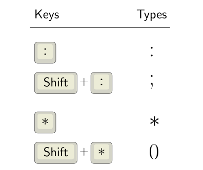

QMK: Custom shift keys
Pascal Getreuer, 2021-10-30 (updated 2025-03-09)
Overview
A frequently asked question about QMK is how to change what a key
types when it is shifted. For instance, how to make a key with
“inverted” shifting such that it types : when pressed
normally and ; when pressed shifted. Or how to implement
“programmer” layouts having keys that type symbols normally and type the
digits when pressed shifted.

It’s surprisingly tricky to get a custom shift key implemented just right. I’ve seen a lot of proposed solutions, and tried a few things myself. Some subtle gotchas:
Key repeating. When you hold a key down long enough, it normally repeats the character. E.g. you may want this repeating behavior to type a row of stars
****************without having to tap the * key for each star.Rolled presses. Real typing is not always clean, individual key presses, especially in fast typing. You may press down one key, then while it is held, begin pressing another key—a “roll” across the keys. A common failure mode is a rolled press involving custom shift keys causes a key to get “stuck” until it is pressed again.
Interoperating with QMK features. Does the custom shift key implementation support shifting when done as a one-shot mod? Or with a mod-tap? Auto Shift? Space Cadet Shift?
This page shares my solution. It correctly handles key repeating and rolled presses, and I’ve tested that it works predictably in combination with one-shot mods, mod-taps, and Space Cadet Shift. It does not work with Auto Shift. To get the analogous effect with Auto Shift, use Auto Shift’s custom shifted values configuration.
Add Custom Shift Keys to your keymap
Step 1: Install my community modules. Then
enable module getreuer/custom_shift_keys
in your keymap.json file. Or if keymap.json
does not exist, create it with the following content:
{
"modules": ["getreuer/custom_shift_keys"]
}Step 2: In your keymap.c, define a
table of “custom_shift_key_t” structs. Each row defines one
key. The keycode is the keycode as it appears in your
layout and determines what is typed normally. The
shifted_keycode is what you want the key to type when
shifted. (See the QMK keycodes
documentation for possible keycodes.)
Here is an example. The first row in my table has a .
(KC_DOT) key that types ?
(KC_QUES) when pressed shifted.
const custom_shift_key_t custom_shift_keys[] = {
{KC_DOT , KC_QUES}, // Shift . is ?
{KC_COMM, KC_EXLM}, // Shift , is !
{KC_MINS, KC_EQL }, // Shift - is =
{KC_COLN, KC_SCLN}, // Shift : is ;
};Special cases:
For tap-hold keys, write the full mod-tap or layer-tap keycode in the first column and the shifted keycode in the second column. Suppose we have a mod-tap key that is dot
.on tap and Ctrl on hold, and we want to customize the shifted tap action to be question mark?, then its entry would be:{LCTL_T(KC_DOT), KC_QUES}, // Shift . is ?Shift has no effect: It is allowed to put the same keycode in both columns to say that Shift has no effect on that key. For example, if we want the minus key
-to type-regardless of Shift, its entry would be:{KC_MINS, KC_MINS}, // Shift - is - (Shift has no effect)
Non-module installation (historical)
⚠ Important
There are two implementations of this feature: the community module described above (recommended) and the earlier non-module implementation described in this section. Pick one. Do not install both, or they will conflict and fail to build.
Step 1: In the directory containing your
keymap.c, create a features subdirectory and
copy custom_shift_keys.h
and custom_shift_keys.c
there.
Step 2: In your rules.mk file, add
SRC += features/custom_shift_keys.cStep 3: In your keymap.c, define a
table of “custom_shift_key_t” structs. Each row defines one
key. The keycode is the keycode as it appears in your
layout and determines what is typed normally. The
shifted_keycode is the key to be typed when shifted.
Here is an example.
#include "features/custom_shift_keys.h"
const custom_shift_key_t custom_shift_keys[] = {
{KC_DOT , KC_QUES}, // Shift . is ?
{KC_COMM, KC_EXLM}, // Shift , is !
{KC_MINS, KC_EQL }, // Shift - is =
{KC_COLN, KC_SCLN}, // Shift : is ;
};
uint8_t NUM_CUSTOM_SHIFT_KEYS =
sizeof(custom_shift_keys) / sizeof(custom_shift_key_t);NUM_CUSTOM_SHIFT_KEYS must be defined as shown above
with the non-module implementation. (If using the module implementation,
this is unnecessary.)
Step 4: Handle custom shift keys from your
process_record_user() function like so:
bool process_record_user(uint16_t keycode, keyrecord_t* record) {
if (!process_custom_shift_keys(keycode, record)) { return false; }
// Your macros ...
return true;
}Troubleshooting: If your keymap fails to build, a
likely reason is that your QMK installation needs to be updated. If you
have the qmk_firmware git repo cloned locally, do a
git pull. Or see Updating
your master branch for more details.
Customization
Negmods
By default, custom shift keys are applied whenever a shift mod is
active, including in combination with non-shift mods. The non-shift mods
remain active with the shifted tap action. For instance with the entry
{KC_DOT, KC_QUES}, pressing Ctrl +
Shift + . sends Ctrl + ?. To disable
custom shift keys with certain mods, define
CUSTOM_SHIFT_KEYS_NEGMODS in your config.h using the
MOD_MASK_<modifier> constants or
MOD_BIT(KC_<modifier>) as described
here. Examples:
// Don't apply custom shift keys when a Ctrl key is held.
#define CUSTOM_SHIFT_KEYS_NEGMODS MOD_MASK_CTRL
// Don't apply custom shift keys together with right Alt (AltGr).
#define CUSTOM_SHIFT_KEYS_NEGMODS MOD_BIT(KC_RALT)Or to enable custom shift keys only with shift mods, add in config.h:
// Don't apply custom shift keys when any non-shift mod is held.
#define CUSTOM_SHIFT_KEYS_NEGMODS ~MOD_MASK_SHIFTLayer mask
By default, custom shift keys apply to keys on all layers. The option
CUSTOM_SHIFT_KEYS_LAYER_MASK may be defined in config.h to
restrict custom shift keys to a set of specified layers.
CUSTOM_SHIFT_KEYS_LAYER_MASK is a bit mask indicating on
which layers the feature is enabled. When a key on the ith layer is
pressed, custom shifting is applied only if the ith bit of
CUSTOM_SHIFT_KEYS_LAYER_MASK is on.
Examples:
// Apply custom shift keys only on layer 3.
#define CUSTOM_SHIFT_KEYS_LAYER_MASK (1 << 3)
// Apply custom shift keys only on layer 0 and 2.
#define CUSTOM_SHIFT_KEYS_LAYER_MASK (1 << 0) | (1 << 2)
// Apply custom shift keys on all layers except layer 0.
#define CUSTOM_SHIFT_KEYS_LAYER_MASK ~(1 << 0)Compared to Key Overrides
QMK’s Key
Overrides feature “overrides” the keys sent for specified
modifier-key combinations. In particular, it can be used to implement
custom shift keys. Add “KEY_OVERRIDE_ENABLE = yes” in
rules.mk to enable it, then the example above is analogously implemented
as:
const key_override_t dot_key_override =
ko_make_basic(MOD_MASK_SHIFT, KC_DOT, KC_QUES); // Shift . is ?
const key_override_t comm_key_override =
ko_make_basic(MOD_MASK_SHIFT, KC_COMM, KC_EXLM); // Shift , is !
const key_override_t mins_key_override =
ko_make_basic(MOD_MASK_SHIFT, KC_MINS, KC_EQL); // Shift - is =
const key_override_t coln_key_override =
ko_make_basic(MOD_MASK_SHIFT, KC_COLN, KC_SCLN); // Shift : is ;
const key_override_t* key_overrides[] = {
&dot_key_override,
&comm_key_override,
&mins_key_override,
&coln_key_override,
};Advantages of custom_shift_keys:
Costs less firmware space:
custom_shift_keysadds 192 bytes to my keymap vs. 1956 bytes for Key Overrides (building with LTO enabled).Simpler configuration syntax.
Advantages of Key Overrides:
Easily enabled, since it is part of QMK.
More general and configurable.
If you are already using Key Overrides for other purposes or have a couple kilobytes to spare, it is a great solution.
Explanation
The registered_keycode variable is the keycode of the
custom shift key that is currently pressed or otherwise
KC_NO. Only one custom key can be pressed at a time.
Attempting to hold multiple custom shift keys releases all but the last
one.
On each press or release of any key:
If
registered_keycodeis notKC_NO, we release the currently active custom shift key (unregister_code16). To avoid stuck keys, this is always the right thing to do: either the event is releasing the active custom shift key (so we should release it), or it is a rolled press manipulating another key while the active custom shift key is still held (so again, we should release it).In the loop, we check whether the current key event is pressing a custom shift key. If so, we clear the shift mods, press the appropriate key depending on whether shift was held (
register_code16), and restore the mods.
Acknowledgements
Thanks a bunch to @wheredoesyourmindgo on GitHub and u/uolot and u/zardvark on Reddit for feedback and improvements to make custom shift keys better.